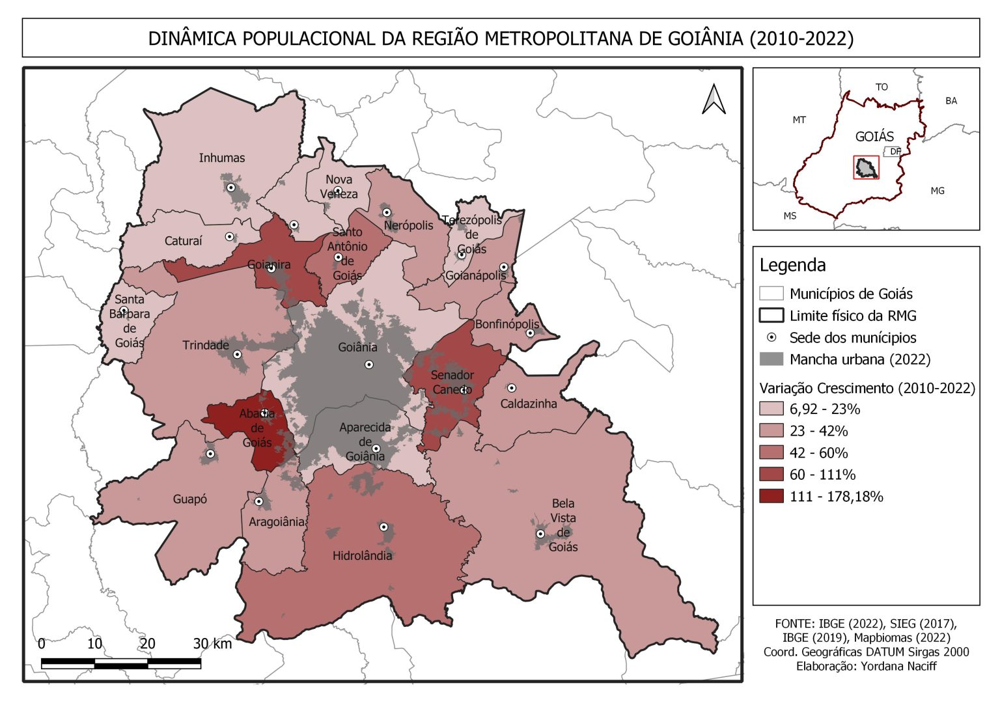

Conurbação e Rede Urbana
Goiânia faz parte de uma rede urbana integrada, com forte conurbação, especialmente com Aparecida de Goiânia e Senador Canedo. As cidades ao redor de Goiânia se desenvolveram como áreas residenciais e industriais, estabelecendo uma rede de interdependência socioeconômica.